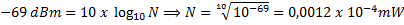

| Töö tegijate nimed: |
| Reenika East |
| Heigo Kruusimaa |
| Töö tegemise kuupäev: Thu Oct 30 11:09:24 2014 |
| Variant nr | Võrgu aadress | Maski bittide arv | Võrgus seadmetele antavate aadresside max arv | võrgumask kümnendkujul | Esimene kasutatav aadress - tugijaama IP aadress |
Teine kasutatav aadress - esimene DHCPga jagatav aadress |
Viimane kasutatav aadress - viimane DHCPga jagatav aadress |
Aadressruumi viimane aadress, levisaade (broadcast) |
| 2 | 10.25.149.16 | 28 | 14 | 255.255.255.240 | 10.25.149.17 | 10.25.149.18 | 10.25.149.30 | 10.25.149.31 |
Võrgu aadressi maski bittide arv (28) oli ette antud. Ehk vabu bitte aadressiruumis on 32-28 = 4, mis tõlgendub 24 = 16 aadressiks. Kuna esimest aadressi ning viimast aadressi kasutada ei saa, jääb meie kasutusele 14 vaba aadressi.
IPv4 jaotub neljaks osaks (x.x.x.x), iga osa 8 bitti (28 = 256 võimalikku väärtust). Võrgumask näitab mitu bitti on meil kasutada, mitu pole kasutatavad. Meie näite puhul on kinni 28.28.28.28-24 võimalikku aadressi ehk 255.255.255.240 (number 0 kuulub ka antud vahemikku, mistõttu 1 võrra väiksemad väärtused).
Kuna esimene aadress (10.25.149.16) ja viimane aadress (10.25.149.31) on reserveeritud vastavalt võrgu aadressiks ja broadcasti aadressiks jääb kasutatav vahemik 10.25.149.17 ja 10.25.149.30 vahele.
| 2,4 GHz võrgu nimi SideLaborA1 |
2,4 GHz kanali number 6 |
| 5 GHz võrgu nimi LaborSideA1 |
5 GHz kanali number 44 |
| katse | WLAN kanalid | Mõõdetud spektri alumine sagedus | Mõõdetud spektri ülemine sagedus | Mõõdetud spektri laius | ||
| 1 | 1 ja 6 | 2.4010 GHz | 2.4210 GHz | 200 Hz | ||
| ||||||
| katse | WLAN kanalid | Mõõdetud spektri alumine sagedus | Mõõdetud spektri ülemine sagedus | Mõõdetud spektri laius | ||
| 2 | 1 ja 4 | 2.4010 GHz | 2.4200 GHz | 190 Hz | ||
 | ||||||
Link väljundfailile
Link väljundfailile
| Valitud kanali number 802.11g (2,4 GHz) võrgus: 11 | |
| Hinnang TCP katsetulemustele: Ei olnud kõige stabiilsem ühendus nagu piltidelt näha. Esimese katse puhul lakkas ta alguses üldse pakette saatmast. Teise katse puhul oli suur ja tihe kiiruste kõikumine. Maksimaalne kiirus kõikus 5-10 Mbit/s vahel. |
|
| Hinnang UDP katsetulemustele: Ühendus lakkas tihti paariks sekundiks kõigil kolmel katsel. Maksimaalne kiirus kõikus 2.7-3.5 Mbit/s vahel. Ilmselt esines nende katsete puhul mingisugune ühenduse tõrge. |
|
| Valitud kanali number 802.11n (5 GHz) võrgus: 44 | |
| Hinnang TCP katsetulemustele: Kuigi kiirus vajus mõnel katsel, ühendus on stabiilsem ning nagu arvata ka kiirem, kus maksimumkiirus kerkis 100 Mbit/s. |
 |
| Hinnang UDP katsetulemustele: Võrreldes 2.4 GHz võrgule on siin UDP ühendus märgatavalt stabiilsem ning kiirem ulatudes kiirusteni 180 Mbit/s, mis teeb sellest kiireima ühenduse tehtud testidest. |
 |
Milline oli mõlema võrgu (802.11g ja 802.11n) korral maksimaalne saavutatud kiirus mõlema protokolli (TCP ja UDP) korral?
802.11g (2.4 GHz) võrgus oli TCP protokolli puhul suurimaks kiiruseks 10 289 Kbits/s, UDP protokolli puhul 3 399 Kbits/s.
802.11n (5 GHz) võrgus oli TCP protokolli suurimaks kiiruseks 103 875 Kbits/s, UDP protokolli puhul 183 750 Kbits/s.
Shannoni valem sidekanali läbilaske arvutamiseks: R = W log2(1+S/N)
Vastavalt matrikli numbrile (134493) on antud andmed: W = 100 MHz, N = -69 dBm, S = 0,0025 mW.Esmalt teisendan antud signaali S = 0.0025 mW detsibellideks:
Seejärel arvutan signaali/müra suhte:
S/N = S - N = -26 - (-69) = 43 dBNüüd leian antud müra N = -69 dB võimsuse ühikutes mW:
Samuti teisendan eelnevalt arvutatud signaali/müra suhte:
Ning lõpuks arvutan saadud tulemustega Shannoni valemi abil sidekanali läbilaske:
| Suurus | Ühik | 3 |
| R | Mbps | 1428 |
| W | MHz | 100 |
| S | dBm | -26 |
| N | dBm | -69 |
| S/N | dB | 43 |
| S | mW | 0,0025 |
| N | mW | 0,0013*10-4 |
Selles laboris seadsime üles 802.11g ning 802.11n standardi WLAN võrgud. Testisime neid võrke esmalt spektrianalüsaatoriga, pannes wifi külge ühendatud arvuti faili alla tõmbama ning seejärel
tema spektrit mõõtes. Võrdlesime programmiga inSSIDer meie võrku teiste võrkudega ning tutvusime erinevate võrgu standarditega ja võrkude kvaliteedi hindamisega. Seejärel uurisime WLAN-i võrgu
kiirust ja kvaliteeti programmiga JPerf 802.11g (2.4GHz) standardil ja 802.11n (5GHz) standardil nii TCP kui UDP protokolliga. 802.11g standardiga mõõtmise ajal tekkis ilmselt mingisugune
ühenduse probleem, kus ühendus katkes tihti paariks sekundiks. Tulemustest järeldus, et 802.11n võrgu kiirused on märgatavalt suuremad 802.11g võrgu kiirustest.
Individuaalülesandes tutvusin Shannoni valemiga ning dB -> mW ja mW -> dB teisendusega.